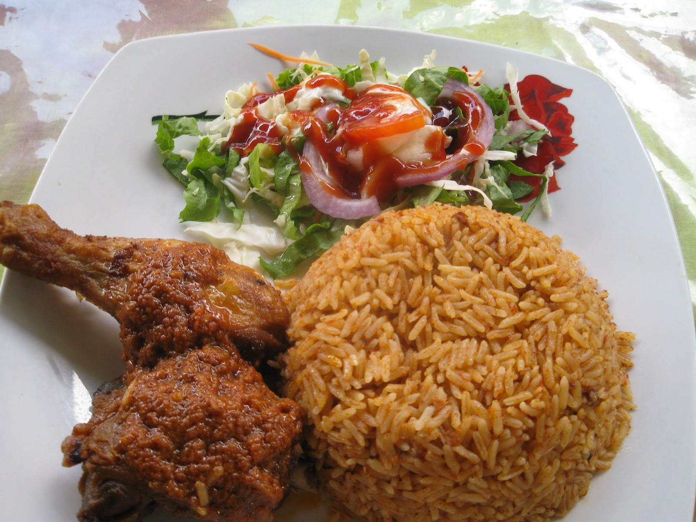
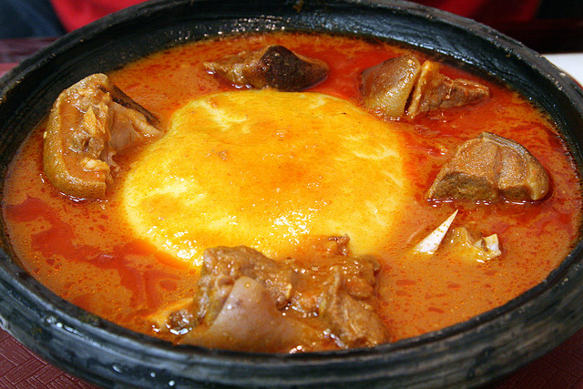
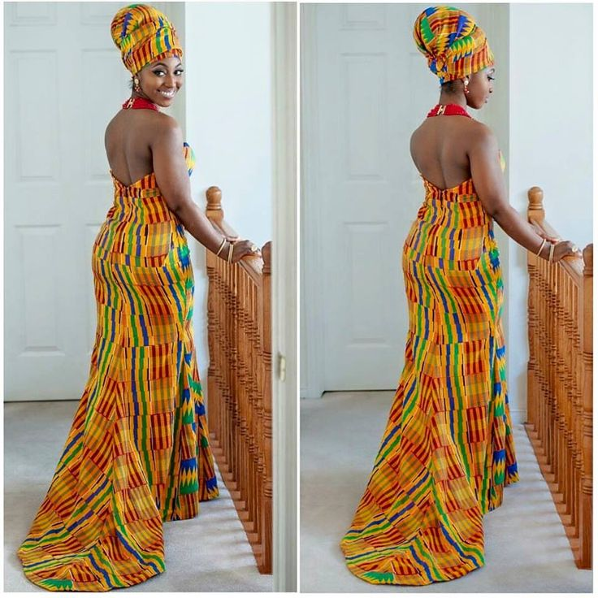
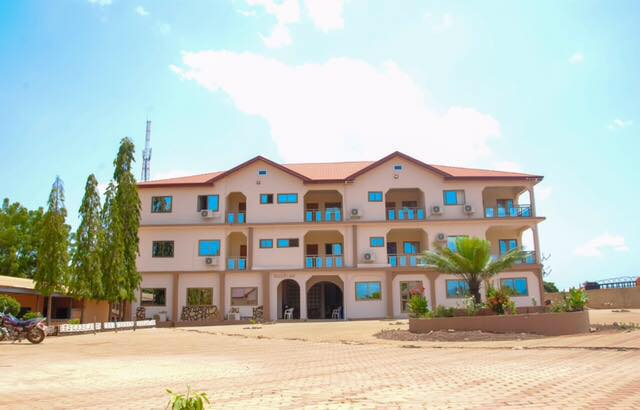
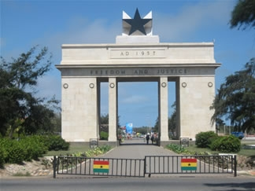
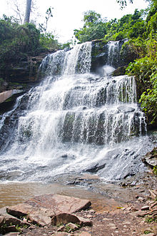
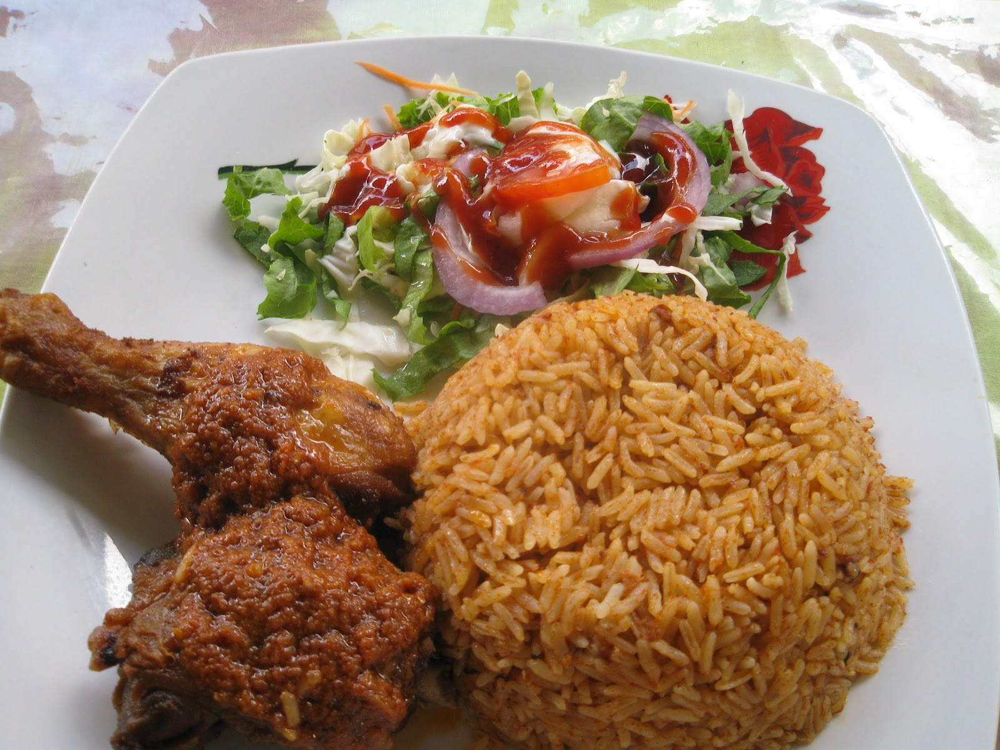
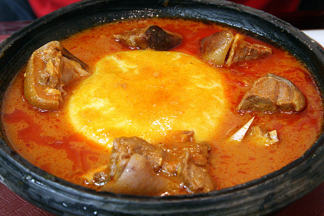
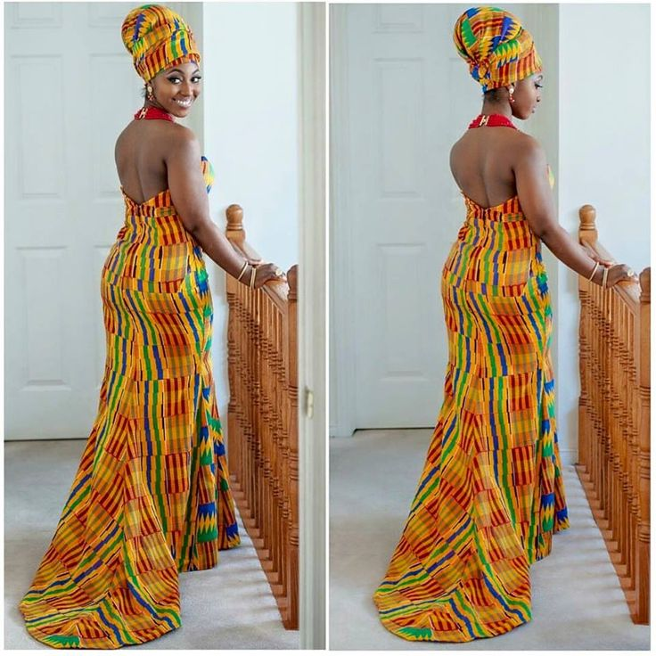
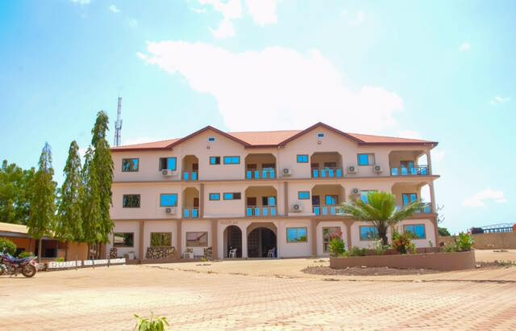
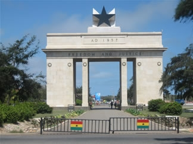
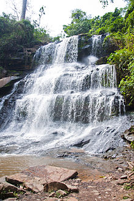
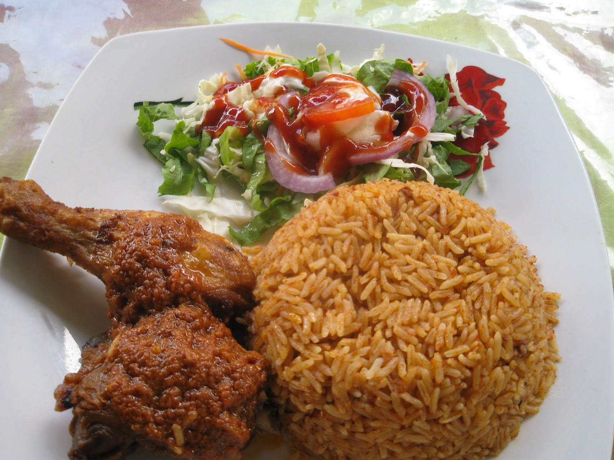
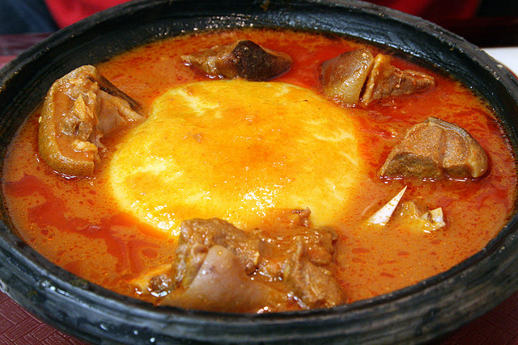
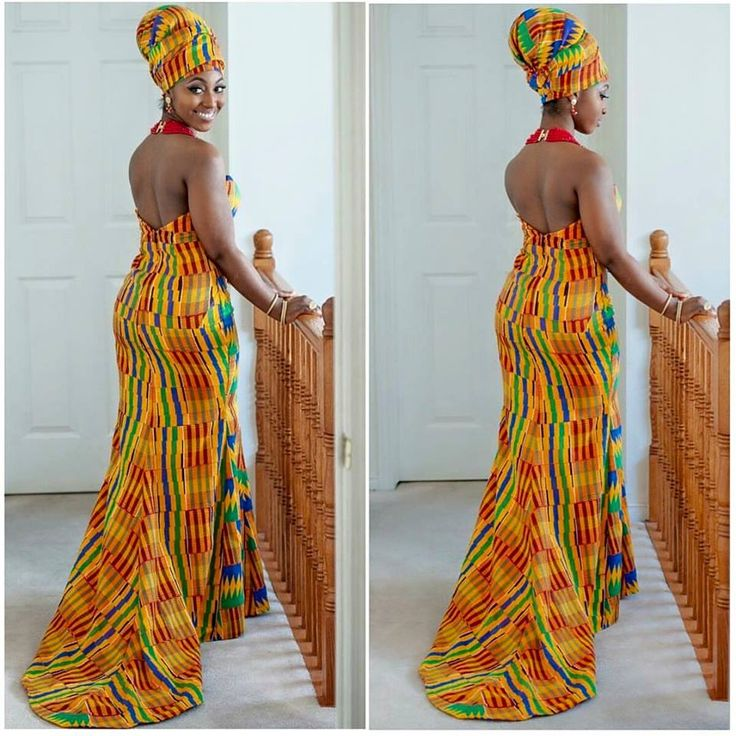
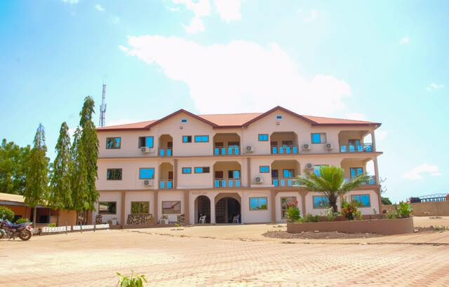
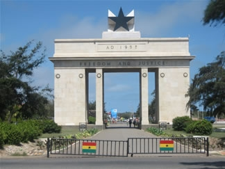
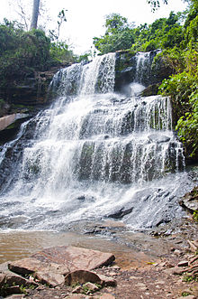
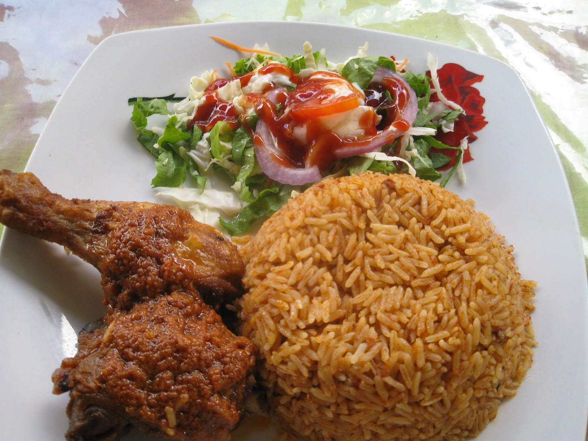
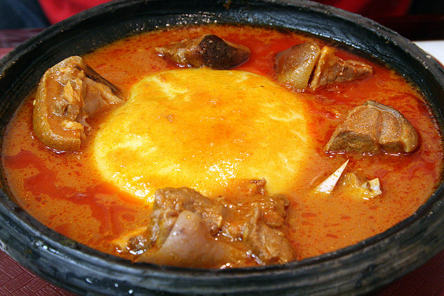
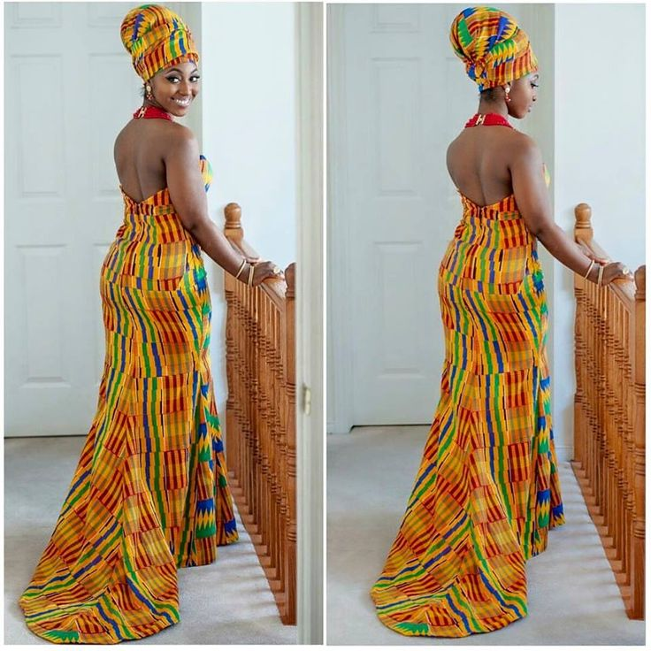
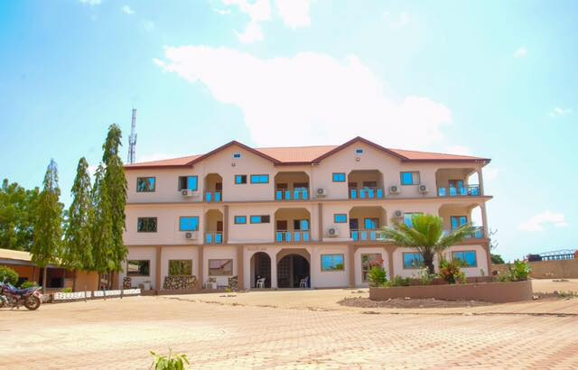
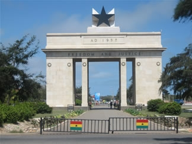
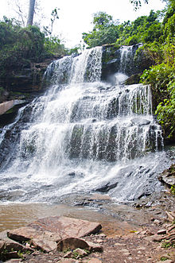
Ghana Braids also known as Banana braids, straight-backs, or corn rows are considered a protective style in the natural hair community. The history goes back to none other than Africa and gained momentum around 500 B.C.
There are various different types of music genres in Ghana but the most popular ones are Highlife and Hiplife.Hiplife infuses Highlife and Hiphop into its genre.This music genre uses rap along with beats. The rap is mostly done in Twi in most songs. Highlife originated in Ghana in the early 20th century. It uses the melodic rhythmic structures of traditional Akan music, but is mainly played with Western instruments.Ghanian artist's such as R2bees,Joey B,Shatta Wale and various other artist use these type of music genres in there music.
Ghana has been a stable democracy since 1992 despite the stereotypes societies has brought upon Ghana.Ghana is the second-biggest gold producer and second-largest cocoa producer in Africa . It's enviornment is rich in diamonds and oil. The growth domestic product rate currently as of 2016 is 3.6% which is the market value of goods and products produced last year. During the year of 2016 the gross national income was 117.2billion dollars . The unempolyment rate in ghana is currently 3.5% also there currency is called Ghanian cedi.